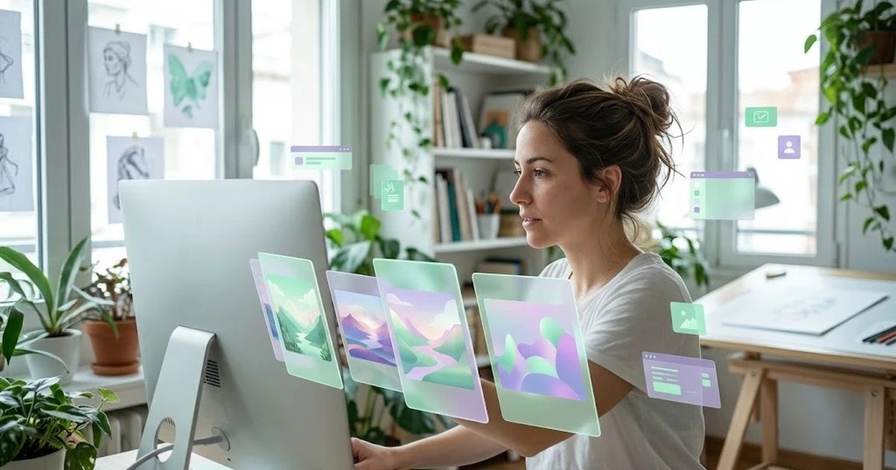

Midjourney sigue siendo una referencia en calidad artística, pero en 2026 no tiene plan gratuito: el más barato cuesta 10 $ al mes. Si solo necesitas imágenes de vez en cuando, o quieres probar antes de pagar, hay alternativas gratis a Midjourney que dan resultados muy buenos. Aquí tienes las ocho que recomendamos, qué incluye cada una sin pagar y para qué tipo de imagen encaja mejor.
En resumen
- Mejor calidad gratis: Gemini y ChatGPT.
- Más parecida a Midjourney en estilos: Leonardo.
- Imágenes con texto o logotipos: Ideogram.
- Uso comercial más tranquilo: Adobe Firefly.
- Sin registro: Perchance o Craiyon, con calidad inferior.
Comparativa rápida
| Alternativa | Límite gratuito | Punto fuerte | Punto débil |
|---|---|---|---|
| Gemini | Uso diario limitado | Calidad y edición con instrucciones | Menos control de estilos artísticos |
| ChatGPT | Pocas imágenes al día | Sigue instrucciones complejas y texto en imagen | Lento en horas punta |
| Leonardo | 150 tokens al día | Estilos, personajes y producto | Interfaz con muchas opciones |
| Ideogram | Unos 10 créditos lentos al día | Texto y logotipos | Pocas imágenes gratis |
| Adobe Firefly | 25 créditos al mes | Entrenado con contenido con licencia | Marca de agua en el plan gratis |
| Microsoft Designer / Copilot | Créditos diarios | Integrado en Windows y Edge | Menos opciones avanzadas |
| Krea | Créditos gratuitos diarios | Generación en tiempo real y mejora de imágenes | Límites cambiantes |
| Perchance / Craiyon | Sin registro, sin límite práctico | Inmediatas | Calidad claramente inferior |
1. Gemini: la mejor calidad gratis
El generador de imágenes de Google (conocido como Nano Banana) produce resultados muy realistas y, sobre todo, permite editar una imagen con instrucciones: «cambia el fondo por una playa», «pon la taza en una mesa de madera». Es la opción más cómoda si ya tienes cuenta de Google.
2. ChatGPT: el que mejor entiende lo que pides
ChatGPT gratis genera pocas imágenes al día, pero sigue muy bien instrucciones largas y es de los mejores escribiendo texto legible dentro de la imagen, algo en lo que Midjourney históricamente ha fallado.
3. Leonardo: la más parecida a Midjourney
Leonardo ofrece modelos y estilos predefinidos (fotografía, ilustración, arte de videojuego), control de composición y 150 tokens gratuitos al día, suficientes para unas 10-15 imágenes. Es la alternativa preferida por quienes vienen de Midjourney y buscan control artístico.
4. Ideogram: para imágenes con texto
Si necesitas un cartel, una portada o una idea de logotipo con letras, Ideogram es la mejor herramienta gratuita. Su plan gratis es limitado, así que úsalo para las piezas donde el texto importa.
5. Adobe Firefly: pensada para uso profesional
Firefly está entrenada con contenido con licencia, lo que la hace interesante si te preocupa el uso comercial. El plan gratuito tiene pocos créditos al mes y añade marca de agua, así que sirve sobre todo para probar.
6. Microsoft Designer y Copilot
Con una cuenta de Microsoft tienes créditos diarios para generar imágenes desde Copilot o Designer, integrados en Windows y Edge. Buena opción rápida si ya trabajas en ese entorno.
7. Krea
Destaca por la generación en tiempo real (ves cómo cambia la imagen mientras escribes o dibujas) y por su herramienta para mejorar y ampliar imágenes. Tiene créditos gratuitos diarios.
8. Sin registro: Perchance y Craiyon
Funcionan sin crear cuenta y sin límites prácticos, lo que las hace útiles para probar ideas. Para imágenes que vayas a publicar, la diferencia de calidad con las anteriores es notable.
¿Cuándo sí compensa pagar Midjourney?
Si generas imágenes a diario, necesitas una estética artística muy cuidada o trabajas en ilustración, concept art o moodboards profesionales, Midjourney sigue compensando. Lo analizamos en nuestra reseña de Midjourney: versiones, precios y calidad.
Un caso práctico
Un estudio de interiorismo pequeño necesita moodboards para presentar ideas a sus clientes. Usa Leonardo gratis para explorar estilos, Gemini para editar las imágenes con los cambios que pide cada cliente e Ideogram para la portada del dossier con el nombre del proyecto. Solo si el volumen crece valorará pagar Midjourney. Ejemplo ilustrativo.
Más opciones y consejos para sacar buenas imágenes en los mejores generadores de imágenes con IA gratis.
Preguntas frecuentes
¿Midjourney tiene versión gratuita?
No. En 2026 Midjourney no ofrece prueba gratuita en su web; el plan más barato, Basic, cuesta 10 $ al mes (8 $ con pago anual). Por eso buscar alternativas gratuitas tiene sentido si solo generas imágenes de vez en cuando.
¿Cuál es la mejor alternativa gratis a Midjourney?
Para la mayoría de usos, Gemini y ChatGPT gratis ofrecen la mejor calidad sin pagar. Leonardo es la más parecida en estilos artísticos y control, e Ideogram es la mejor cuando la imagen lleva texto o un logotipo.
¿Hay alternativas a Midjourney sin registro?
Algunas herramientas sencillas como Perchance o Craiyon funcionan sin cuenta, pero su calidad es claramente inferior. Para imágenes que vayas a publicar, merece la pena registrarse gratis en Gemini, ChatGPT o Leonardo.
¿Puedo usar comercialmente las imágenes de estas alternativas gratis?
Depende de cada herramienta y plan. Algunas permiten uso comercial en el plan gratuito y otras no, o añaden marca de agua. Revisa siempre las condiciones de uso antes de usar una imagen en tu negocio.
Escrito y revisado por el equipo editorial de HerramientasIA. No tenemos acuerdos comerciales con las herramientas mencionadas. ¿Ves un dato desactualizado? Avísanos.